7. Gestão do acesso simultâneo aos dados
Até agora, utilizámos tabelas das quais éramos os únicos utilizadores. Na prática, numa máquina multiutilizador, os dados são, na maioria das vezes, partilhados entre diferentes utilizadores. Coloca-se então a questão: quem pode utilizar determinada tabela e de que forma (consulta, inserção, eliminação, adição, ...)?
7.1. Criação de utilizadores do Firebird
Quando trabalhámos com o IB-Expert, iniciámos sessão como utilizador SYSDBA. É possível encontrar esta informação nas propriedades da ligação aberta ao SGBD:
 |  |
À direita, vemos que o utilizador ligado é o [SYSDBA]. O que não se vê é a sua palavra-passe, [masterkey]. O [SYSDBA] é um utilizador especial do Firebird: tem todos os direitos sobre todos os objetos geridos pelo SGBD. É possível criar novos utilizadores com o IBExpert utilizando a opção [Tools / User Manager] ou o seguinte ícone:

Aparece a janela de gestão de utilizadores:

O botão [Add] permite criar novos utilizadores:

Vamos, assim, criar os seguintes utilizadores:
nome | palavra-passe |
ADMIN1 | admin1 |
ADMIN2 | admin2 |
SELECT1 | select1 |
SELECT2 | select2 |
UPDATE1 | update1 |
UPDATE2 | update2 |
7.2. Conceder direitos de acesso aos utilizadores
Uma base de dados pertence à pessoa que a criou. As bases de dados que criámos até agora pertenciam ao utilizador [SYSDBA]. Para ilustrar o conceito de direitos, vamos criar (Database / Create Database) uma nova base de dados com a identificação [ADMIN1, admin1]:

e registe-a com o alias DBACCES (ADMIN1). A utilização de aliases permite abrir ligações à mesma base de dados atribuindo-lhes identificadores diferentes, o que facilita a sua localização no explorador de bases de dados de IBExpert:
 |  |
Vamos agora criar as duas tabelas seguintes: TA e TB:
Tabela TA
 |
Tabela TB
 |
Estas tabelas não têm qualquer ligação entre si.
Com o IB-Expert, vamos criar uma segunda ligação à base de dados [DBACCES], desta vez com o nome [ADMIN2 / admin2]. Para tal, utilizamos a opção [Database / Register Database]:
 |  |
Selecionemos o ficheiro DBACCES (ADMIN2) e abramos um editor SQL (Shift + F12):
 |
Teremos a oportunidade de utilizar várias ligações na mesma base de dados [DBACCES]. Para cada uma delas, teremos um editor SQL. No [1], o editor SQL indica o alias da base de dados conectada. Utilize esta indicação para saber em que editor SQL se encontra. Isto será importante, pois iremos criar ligações que não terão os mesmos direitos de acesso aos objetos da base de dados.
Vamos consultar o conteúdo da tabela TA:

Recebemos a seguinte mensagem de erro:

O que significa isto? A base de dados [DBACCESS] foi criada pelo utilizador [ADMIN1] e, por isso, é propriedade deste. Apenas ele tem acesso aos diferentes objetos desta base de dados. Pode conceder direitos de acesso a outros utilizadores com o comando SQL GRANT. Este comando tem várias sintaxes. Uma delas é a seguinte:
GRANT privilégio1, privilégio2, ...| ALL PRIVILEGES ON table/vue TO utilizador1, utilizador2, ...| PUBLIC [ WITH GRANT OPTION ] | |
concede privilégios de acesso privilègei ou todos os privilégios (ALL PRIVILEGES) na table ou vue aos utilizadores utilisateuri ou a todos os utilizadores (PUBLIC). A cláusula WITH GRANT OPTION permite que os utilizadores que receberam os privilégios os transmitam, por sua vez, a outros utilizadores. |
Entre os privilégios privilègei que podem ser concedidos encontram-se os seguintes:
direito de utilizar o comando DELETE na tabela ou vista. | |
direito de utilizar o comando INSERT na tabela ou vista | |
direito de utilizar o comando SELECT na tabela ou vista | |
direito de utilizar o comando UPDATE na tabela ou vista. Este direito pode ser restringido a determinadas colunas através da sintaxe: GRANT atualizar (col1, col2, ...) ON tabela/vista TO utilizador1, utilizador2, ...| PUBLIC [ WITH GRANT OPTION ] |
Concedamos ao utilizador [ADMIN2] o direito SELECT sobre a tabela TA. Apenas o proprietário da tabela pode conceder este direito, c.a.d. Neste caso, [ADMIN1]. Vamos selecionar a ligação DBACCES (ADMIN1) e abrir um novo editor SQL (Shift+F12):

Posteriormente, iremos alternar entre os editores SQL. Para nos orientarmos, podemos utilizar a opção [Windows] do menu:
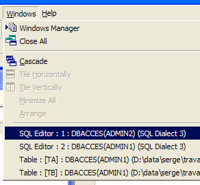
Acima, vemos os dois editores SQL, cada um associado a um utilizador específico. Voltemos ao editor SQL (ADMIN1) e emitamos o seguinte comando:

Em seguida, confirmemos com um COMMIT:

Feito isto, acedemos ao editor do utilizador ADMIN2 para refazer o SELECT que tinha falhado:
Recebemos a seguinte mensagem de erro:
O utilizador [ADMIN2] continua sem ter permissão para consultar a tabela [TA]. Na verdade, parece que os direitos de um utilizador são carregados no momento em que este inicia sessão. O utilizador [ADMIN2] continuaria, então, a ter os mesmos direitos que tinha no início da sua sessão, ou seja, nenhum. Vamos verificar isso. Desliguemos o utilizador [ADMIN2]:
- selecionar a sua sessão
- solicitar o logout clicando com o botão direito do rato na sessão e selecionando a opção [Deconnect from database] ou (Shift + Ctrl + D)

Se um painel solicitar um [COMMIT], introduza o [COMMIT]. Em seguida, volte a ligar o utilizador [ADMIN2] selecionando a opção [Reconnect] acima referida. Feito isto, voltemos ao editor SQL (ADMIN2) e repitamos a solicitação SELECT que falhou:
Obtém-se então o seguinte resultado:

Desta vez, ADMIN2 pode consultar a tabela TA graças ao direito SELECT que lhe foi concedido pelo seu proprietário, ADMIN1. Normalmente, este é o único direito que possui. Vamos verificar isso. Ainda no editor SQL (ADMIN2):
 |  |
O ecrã à direita mostra que o ADMIN2 não possui o direito DELETE na tabela TA.
Voltemos ao editor SQL (ADMIN1) para atribuir mais direitos ao utilizador ADMIN2. Executamos sucessivamente os dois comandos seguintes:
 | 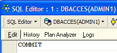 |
- o primeiro comando concede ao utilizador ADMIN2 todos os direitos de acesso à tabela [TA], além da possibilidade de este também poder conceder direitos (WITH GRANT OPTION)
- o segundo comando valida o anterior
Feito isto, tal como anteriormente, renovemos a ligação do utilizador [ADMIN2] (Desligar / Voltar a ligar) e, em seguida, no editor SQL (ADMIN2), introduzamos os seguintes comandos:
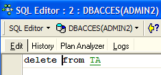 | 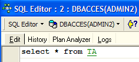 |  |
O ADMIN2 conseguiu eliminar todas as linhas da tabela TA. Vamos anular essa eliminação com um ROLLBACK:
 |  |
Vamos verificar se o ADMIN2 pode, por sua vez, conceder direitos sobre a tabela TA.
 |  |
Vamos agora abrir uma ligação à base de dados [DBACCES] (Base de dados / Registar base de dados) com o nome [SELECT1 / select1], um dos utilizadores criados anteriormente, e, em seguida, clicar duas vezes na ligação assim criada em [Database Explorer]:
 |  |
Selecionemos esta nova ligação e abramos um novo editor SQL (Shift + F12) para introduzir os seguintes comandos:
 |  |
O utilizador SELECT1 possui, de facto, o direito SELECT na tabela TA. Tem a possibilidade de transferir esse direito para o utilizador SELECT2?
 |
A operação falhou porque o utilizador SELECT1 não recebeu a autorização para transferir a autorização SELECT que recebeu do utilizador ADMIN2. Para tal, teria sido necessário que outilizador ADMIN2 utilizasse a cláusula WITH GRANT OPTION na sua ordem SQL GRANT. As regras de transmissão são simples:
- um utilizador só pode transmitir os direitos que recebeu e nada mais
- e só pode transmiti-los se os tiver recebido com o privilégio [WITH GRANT OPTION]
Um direito concedido pode ser retirado com o comando REVOKE:
REVOKE privilégio1, privilégio2, ...| ALL PRIVILEGES ON table/vue FROM utilizador1, utilizador2, ...| PUBLIC | |
revoga os privilégios de acesso privilègei ou todos os privilégios (ALL PRIVILEGES) na table ou vue aos utilizadores utilisateuri ou a todos os utilizadores (PUBLIC). |
Vamos tentar. Voltemos ao editor SQL do ADMIN2 para retirar o direito SELECT que atribuímos ao utilizador SELECT1:
 |  |
Vamos desligar e, em seguida, restabelecer a ligação do utilizador SELECT1. Depois, no editor SQL (SELECT1), vamos consultar o conteúdo da tabela TA:
 | 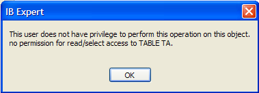 |
O utilizador SELECT1 perdeu efetivamente o seu direito de leitura da tabela TA. Note-se que foi o utilizador ADMIN2 que lhe concedeu esse direito e foi o utilizador ADMIN2 que lho retirou. Se ADMIN1 tentar retirá-lo, não é sinalizado qualquer erro, mas verifica-se posteriormente que SELECT1 manteve o seu direito SELECT.
Um direito pode ser concedido a todos com a sintaxe: GRANT direito(s) ON tabela / vista TO PUBLIC. Concedamos, assim, o direito SELECT sobre a tabela TA a todos. Podemos utilizar ADMIN1 ou ADMIN2 para o fazer. Utilizamos o ADMIN2:
 | 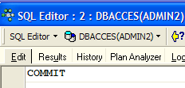 |
Vamos criar uma ligação à base de dados com o utilizador USER1 / user1:
 |  |
Com a sessão DBACCES (USER1), vamos abrir um novo editor SQL (Shift + F12) e introduzir os seguintes comandos:
 |  |
O utilizador USER1 possui, de facto, o direito SELECT na tabela TA.
7.3. As transações
7.3.1. Níveis de isolamento
Deixamos agora de lado a questão dos direitos de acesso aos objetos de uma base de dados para abordar a questão dos acessos simultâneos a esses objetos. Dois utilizadores com direitos de acesso suficientes a um objeto da base de dados, por exemplo, uma tabela, pretendem utilizá-lo ao mesmo tempo. O que acontece?
Cada utilizador trabalha no âmbito de uma transação. Uma transação é uma sequência de ordens SQL que é executada de forma «atómica»:
- ou todas as operações são bem-sucedidas
- ou uma delas falha e, nesse caso, todas as anteriores são anuladas
No final, as operações de uma transação ou foram todas aplicadas com sucesso, ou nenhuma foi aplicada. Quando o próprio utilizador controla a transação (o que acontece em todo este documento), valida uma transação através de um comando COMMIT ou anula-a através de um comando ROLLBACK.
Cada utilizador trabalha numa transação que lhe pertence. Distingue-se habitualmente quatro níveis de isolamento entre os diferentes utilizadores:
- Leitura não confirmada
- Leitura confirmada
- Leitura repetível
- Serializable
Leitura não confirmada
Este modo de isolamento também é conhecido como «Dirty Read». Eis um exemplo do que pode acontecer neste modo:
- um utilizador U1 inicia uma transação numa tabela T
- um utilizador U2 inicia uma transação na mesma tabela T
- o utilizador U1 altera registos da tabela T, mas ainda não os confirma
- o utilizador U2 «vê» essas alterações e toma decisões com base no que vê
- o utilizador cancela a sua transação através de um ROLLBACK
Vê-se que, no ponto 4, o utilizador U2 tomou uma decisão com base em dados que se revelarão falsos posteriormente.
Leitura confirmada
Este modo de isolamento evita a armadilha anterior. Neste modo, o utilizador U2, na etapa 4, não «verá» as alterações introduzidas pelo utilizador U1 na tabela T. Só as verá depois de o utilizador U1 ter concluído a sua transação.
Neste modo, também denominado «Unrepeatable Read», podem ocorrer as seguintes situações:
- um utilizador U1 inicia uma transação na tabela T
- um utilizador U2 inicia uma transação na mesma tabela T
- O utilizador U2 executa um SELECT para obter a média da coluna C das linhas de T que satisfazem uma determinada condição
- o utilizador U1 altera (UPDATE) determinados valores da coluna C de T e valida-os (COMMIT)
- o utilizador U2 repete o mesmo SELECT que no ponto 3. Verá que a média da coluna C mudou devido às alterações feitas por U1.
Agora, o utilizador U2 só vê as alterações «validadas» por U1. Mas, embora permaneça na mesma transação, duas operações idênticas (3 e 5) produzem resultados diferentes. O termo «Unrepeatable Read» designa esta situação. Trata-se de uma situação incómoda para quem deseja ter uma imagem estável da tabela T.
Leitura Repetível
Neste modo de isolamento, um utilizador tem a garantia de obter os mesmos resultados nas suas leituras da base de dados, desde que permaneça na mesma transação. Trabalha com uma imagem na qual nunca são refletidas as alterações introduzidas por outras transações, mesmo que estas tenham sido validadas. Só as verá quando ele próprio concluir a sua transação com um COMMIT ou ROLLBACK.
Este modo de isolamento, no entanto, ainda não é perfeito. Após a operação 3 acima, as linhas consultadas pelo utilizador U2 ficam bloqueadas. Durante a operação 4, o utilizador U1 não poderá alterar (UPDATE) os valores da coluna C dessas linhas. No entanto, pode adicionar linhas (INSERT). Se algumas das linhas adicionadas satisfizerem a condição testada na etapa 3, a operação 5 resultará numa média diferente da obtida na etapa 3, devido às linhas adicionadas.
Para resolver este novo problema, é necessário mudar para o nível de isolamento «Serializable».
Serializable
Neste modo de isolamento, as transações são completamente independentes umas das outras. Garante que o resultado de duas transações realizadas simultaneamente será o mesmo que se fossem realizadas uma após a outra. Para alcançar este resultado, durante a operação 4, em que o utilizador U1 pretende adicionar linhas que alterariam o resultado da transação SELECT do utilizador U1, tal será impedido. Uma mensagem de erro indicará que a inserção não é possível. Tal só será possível quando o utilizador U2 tiver validado a sua transação.
Os quatro níveis de isolamento de transações SQL não estão disponíveis em todos os SGBD. O Firebird fornece os seguintes níveis de isolamento:
- snapshot: modo de isolamento por predefinição. Corresponde ao modo «Repeatable Read» da norma SQL.
- committed read: corresponde ao modo «committed read» da norma SQL
Este nível de isolamento é definido pelo comando SET TRANSACTION:
SET TRANSACTION [READ WRITE | READ ONLY] [WAIT|NOWAIT] ISOLATION LEVEL [SNAPSHOT | READ COMMITTED] | |
as palavras-chave sublinhadas são os valores por predefinição READ WRITE: a transação pode ler e escrever READ ONLY: a transação só pode ler WAIT: em caso de conflito entre duas transações, aquela que não conseguiu realizar a sua operação aguarda que a outra transação seja validada. Já não pode emitir ordens SQL. NOWAIT: a transação que não conseguiu realizar a sua operação não fica bloqueada. Recebe uma mensagem de erro e pode continuar a funcionar. ISOLATION LEVEL [SNAPSHOT | READ COMMITTED]: nível de isolamento |
Vamos tentar. No editor SQL (ADMIN1), introduzimos o seguinte comando SQL:

Vemos que não foi autorizada. Não sabemos porquê...
O IB-Expert permite definir o modo de isolamento de outra forma. Cliquemos com o botão direito do rato na ligação DBACCES(ADMIN1) para selecionar a opção [Database Registration Info]:
 |  |
O ecrã à direita mostra a presença de uma opção [Transactions]. Esta opção permite-nos definir o nível de isolamento das transações. Definimo-lo aqui como [snapshot]. Fazemos o mesmo com a ligação DBACCES (ADMIN2).
7.3.2. O modo snapshot
Analisemos o nível de isolamento snapshot, que é o modo de isolamento predefinido do Firebird. Quando o utilizador inicia uma transação, é tirada uma «fotografia» da base de dados. O utilizador irá então trabalhar nessa «fotografia». Cada utilizador trabalha, assim, numa imagem da base de dados que lhe é própria. Se o utilizador efetuar alterações nessa imagem, os outros utilizadores não as verão. Só as verão quando o utilizador que as efetuou as tiver validado através de um COMMIT.
Podemos considerar dois casos:
- um utilizador consulta a tabela (select) enquanto outro a está a modificar (insert, update, delete)
- os dois utilizadores pretendem alterar a tabela ao mesmo tempo
7.3.2.1. Princípio da leitura coerente
Suponhamos dois utilizadores, U1 e U2, a trabalhar na mesma tabela TAB:
A transação do utilizador U1 começa no momento T1a e termina no momento T1b.
A transação do utilizador U2 começa no momento T2a e termina no momento T2b.
U1 está a trabalhar numa fotografia de TAB tirada na altura de T1a. Entre T1a e T1b, ele altera TAB. Os outros utilizadores só terão acesso a estas alterações no momento T1b, quando U1 criar um COMMIT.
O U2 está a trabalhar numa fotografia do TAB tirada no momento T2a, ou seja, a mesma fotografia utilizada por U1 (desde que outros utilizadores não tenham alterado o original entretanto). Ele não «vê» as alterações que o utilizador U1 possa ter feito em TAB. Só as poderá ver no momento T1b.
Vamos ilustrar este ponto na nossa base [DBACCES]. Vamos fazer com que os dois utilizadores, [ADMIN1] e [ADMIN2], trabalhem em simultâneo. Vamos aceder à ligação DBACCES (ADMIN1) e, no editor SQL de ADMIN1, realizar as seguintes operações:
 |  |  |
O ADMIN1 alterou a linha n.º 2 da tabela TA, mas ainda não validou (COMMIT) a sua operação. O utilizador ADMIN2 executa então um SELECT na tabela TA (passa-se do editor SQL para o ADMIN2). Estamos antes do momento T2a do exemplo.
 |  |
Regresso ao editor SQL a partir de ADMIN1, que valida a sua adição:
 |
Voltar ao editor SQL de ADMIN2 para refazer o SELECT:
| 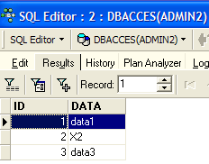 |
O ADMIN2 vê as alterações efetuadas pelo ADMIN1. No modo snapshot, uma transação não vê as alterações efetuadas por outras transações enquanto estas não estiverem concluídas.
7.3.2.2. Alteração simultânea de um mesmo objeto da base de dados por duas transações
Vejamos um exemplo na contabilidade: U1 e U2 estão a trabalhar em contas. A transação U1 debita a transação comptex num montante S e credita a transação comptey no mesmo montante. Irá fazê-lo em várias etapas:
U1 inicia uma transação no momento T1a, debita comptex no momento T1b, credita comptey no momento T1c e valida ambas as operações no momento T1d. Suponhamos, além disso, que U2 pretenda fazer o mesmo, inicie a sua transação no momento T2a e a termine no momento T2d, de acordo com o esquema seguinte:
--------+----------+----+----+-------+------+-----+-------+---------
T1a T1b T2a T1c T2b T1d T2c T2d
No momento T2, é tirada uma imagem da tabela de contas para U2. Esta é coerente de acordo com o princípio de snapshot. O U2 apresenta o estado inicial das contas comptex e comptey, uma vez que o U1 ainda não validou as suas operações.
Suponhamos que comptex tenha um saldo inicial de 1000 € e que cada um dos utilizadores U1 e U2 pretenda debitar 100 € dessa conta.
- No momento T1b, U1 deduz 100 € de comptex, passando assim o saldo deste para 90 €. Esta operação só será validada no momento T1d.
- No momento T2b, U2 vê comptex com 1000 € (princípio da leitura coerente) e diminui o seu saldo em 100 €, passando-o assim para 90 €.
- No final, no momento T2d, quando tudo tiver sido validado, o comptex terá um saldo de 90 €, em vez dos 80 € esperados.
A solução para este problema consiste em impedir que U2 altere comptex enquanto U1 não tiver concluído a sua transação. O U2 ficará, assim, bloqueado até ao momento T1d. O modo snapshot fornece este mecanismo.
Ilustremos isto com a base de dados DBACCES. ADMIN1 inicia uma transação no seu editor SQL (ADMIN1):
 |  |  |  |
Começámos por executar um COMMIT para garantir que iniciávamos uma nova transação. Em seguida, eliminámos a linha n.º 4. A transação ainda não foi validada.
O ADMIN2, por sua vez, inicia uma transação no seu editor SQL (ADMIN2):
 |  |
O ecrã à direita mostra que o ADMIN2 tentou alterar a linha n.º 4. Foi-lhe respondido que isso não era possível porque outra pessoa já a tinha alterado, mas ainda não tinha validado essa alteração.
Voltemos ao editor SQL (ADMIN1) para criar o COMMIT:

Voltemos ao editor SQL (ADMIN2) para repetir o comando UPDATE:
 | 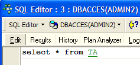 |
 |  |
A operação UPDATE decorre sem problemas, apesar de a linha n.º 4 já não existir, como mostra o SELECT que se segue. É neste momento que o ADMIN2 deteta que a linha já não existe.
7.3.2.3. O modo «Repeatable Read»
Vamos agora ilustrar o modo «Repeatable Read». Este nível de isolamento é proporcionado pelo modo «snapshot». Garante que uma transação obtenha sempre o mesmo resultado ao ler a base de dados.
Comecemos por trabalhar com o editor SQL de ADMIN2:
 | 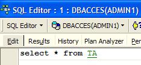 | 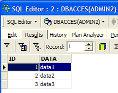 |
 |  |
Passemos agora ao editor SQL do ADMIN1:
 |  |  |
 |  | 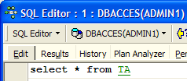 |
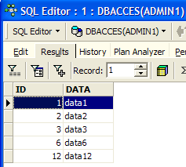 |  |
O utilizador ADMIN1 adicionou duas linhas e confirmou a sua transação. Voltemos agora ao editor SQL (ADMIN2) para repetir o SELECT SUM:
 |  |
Verifica-se que o ADMIN2 não reconhece as linhas adicionadas pelo ADMIN1, apesar de estas terem sido validadas por um COMMIT. O SELECT SUM apresenta o mesmo resultado que antes das adições. Este é o princípio da «Repeatable Read».
Agora, ainda no editor SQL (ADMIN2), vamos validar a transação com um COMMIT e, em seguida, executar novamente o SELECT SUM:
 |  |  |
As linhas adicionadas pelo ADMIN1 são agora tidas em conta.
7.3.3. O modo «Committed Read»
Vamos agora ilustrar o modo «Committed Read». Este nível de isolamento é análogo ao do snapshot, exceto no que diz respeito ao «Repeatable Read».
Começamos por alterar o nível de isolamento das transações das duas ligações.
- Desligamos os dois utilizadores ADMIN1 e ADMIN2
- alteramos o nível de isolamento das suas transações

- reconectamos os utilizadores ADMIN1 e ADMIN2
Retomamos agora o exemplo anterior que ilustrava a «Repeatable Read» para mostrar que já não temos o mesmo comportamento. Comecemos por trabalhar com o editor SQL de ADMIN2:
|
| |
Passemos agora ao editor SQL do ADMIN1:
| | |
| |
|
O utilizador ADMIN1 adicionou duas linhas e confirmou a sua transação. Voltemos agora ao editor SQL (ADMIN2) para repetir o SELECT SUM:
|  |
O SELECT SUM não apresenta o mesmo resultado que antes das alterações introduzidas pelo ADMIN1. Esta é a diferença entre os modos «snapshot» e «read committed».